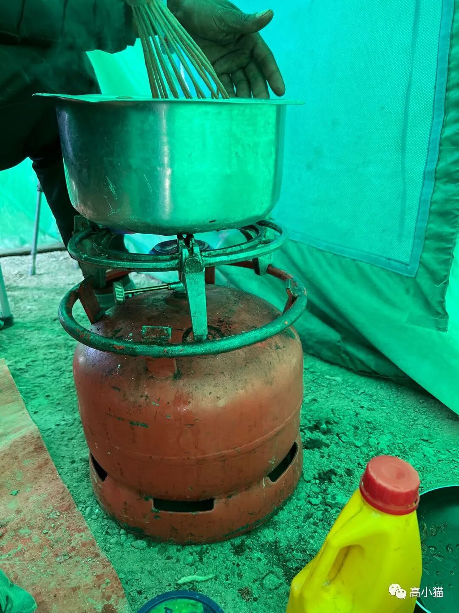
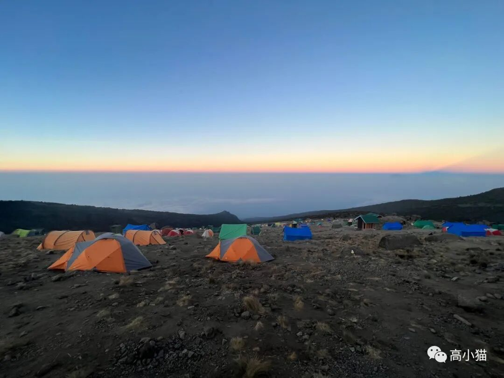
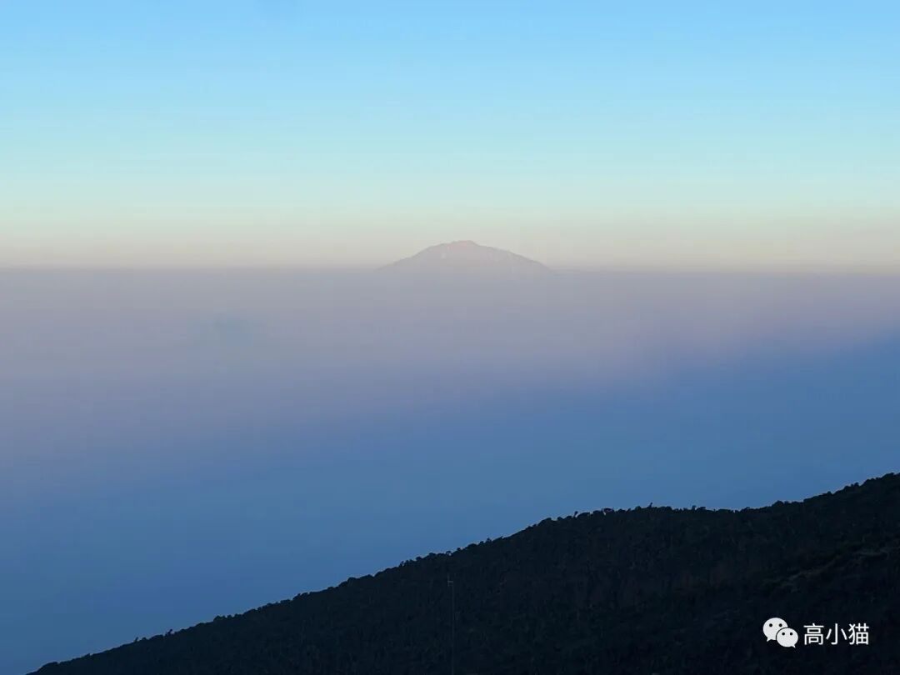
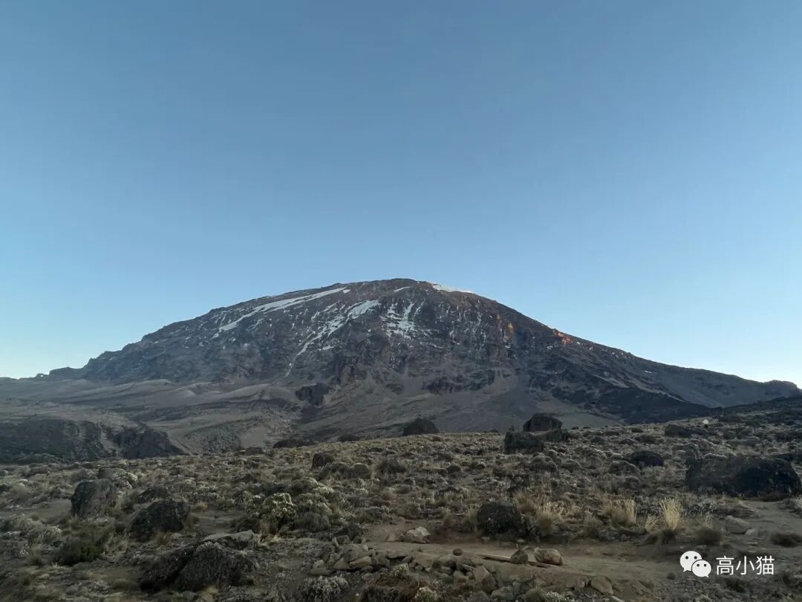
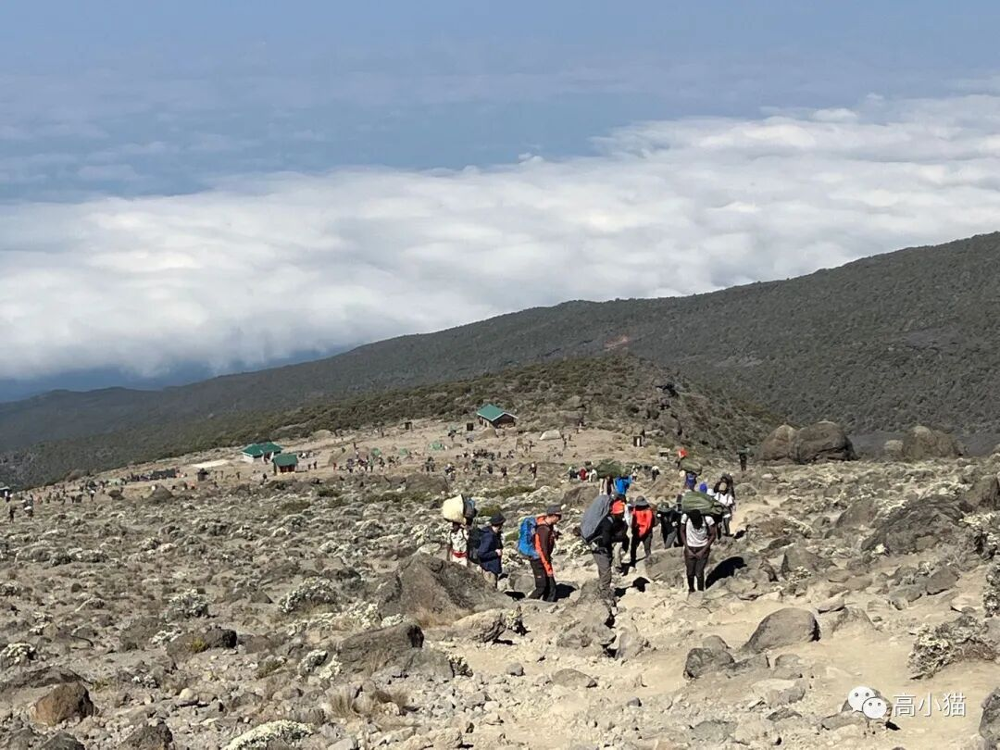
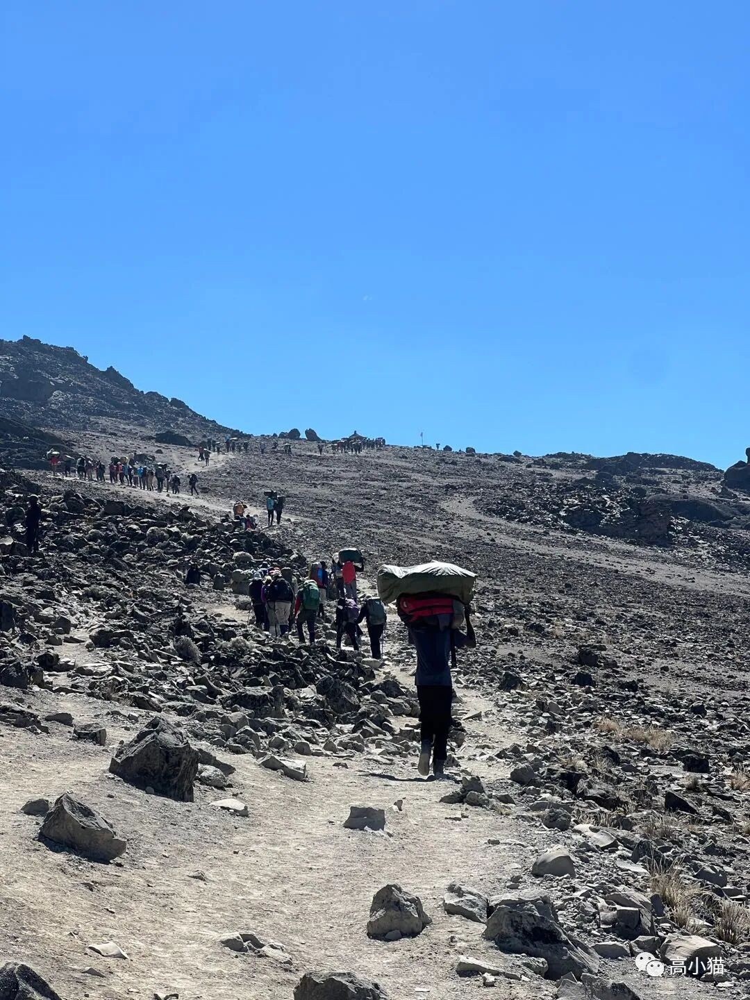
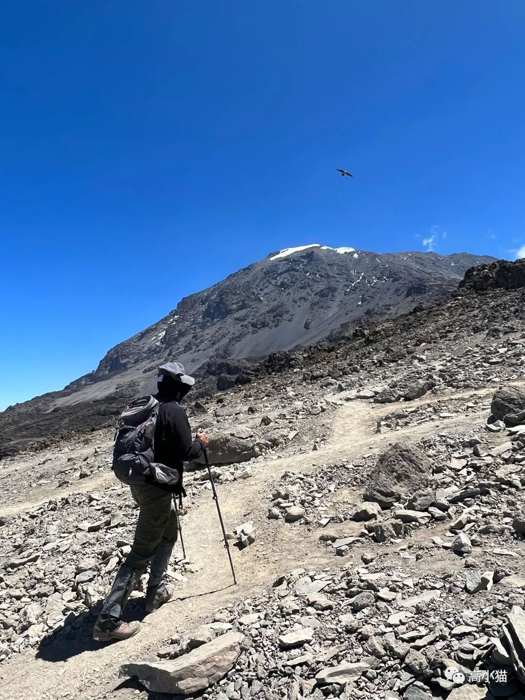
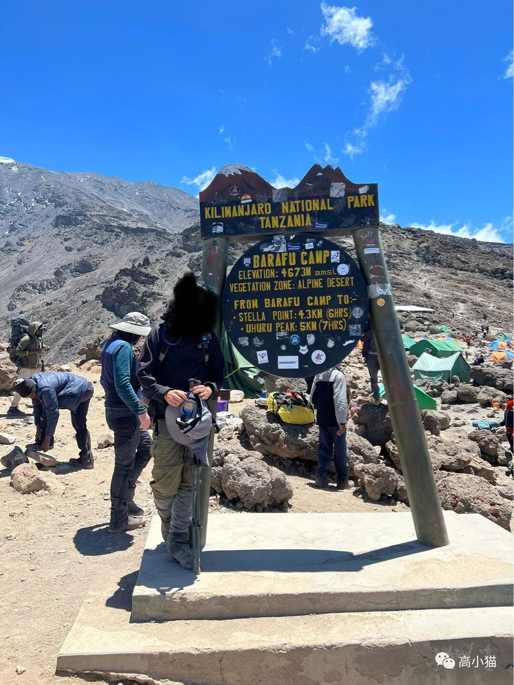

昨晚8点多就睡了。之所以这么早睡，是希望可以“倒时差”，这样可能可以今天下午2点就入睡，以便凌晨有力气登顶。
半夜的0点我准时被尿憋醒，上完厕所，下一次醒来已经是4am。我想着大概睡满了8小时，就穿衣服起来了。不过帐篷外还是一片漆黑，只有一些鸟的怪叫声。我于是缩在睡袋里看wyddy的游记。旅游的经历各不相同，人对世界的感知也是如此不同，读书总让人能以一个奇怪的方式穿越到另一个次元。
平时如果有网络的时候，我一定会刷刷手机上的消息，不过不知道幸运还是不幸，dwj给我的sim卡的data居然被我用完了，手机上收到了欠费的短信。我也就只好看书。也许爬山或者以前工作也是一样，我经常被逼到一条路上，然后慢慢开始享受它。
6:13am，帐篷外开始有帐篷的拉链声，脚步声，以及炊具的响动声。突然想到还没有贴过Oscar大厨的做饭炊具，这里贴一下。
背这个东西上山可是真要命因为已经在云层之上，早上起来的景色有点美。云层延伸到地平线，被朝阳染红，配上蓝色的天空。

远处还有另外一个山峰，也钻破了云层，那是附近的另一座高峰，mount meru。

从营地看，乞力马扎罗山的山顶也已经很近了。

今天的早上基本上跟前几天一样，就连Oscar做的早饭都类似，面包加上汤加上水果。不过今天早上上厕所时间比较久，似乎有点拉肚子。
早上量的心率87，血氧85。不过这个测量误差很大，也可能是这个仪器做工一般吧。

9:18am终于离开营地今天的行程不长，只有3.3km，会上升到4662m海拔的Barafu camp。相对来说算是第二轻松的一天了。最轻松的是从shira i 到shira ii camp的那天。
一开始路边还有非常多的everlasting flower，渐渐地向前走了一个小时，路边开始变得只有岩石了。


我们大约在12:10pm到达了最后一个camp，Barafu camp。

这个camp非常大，从camp的一头走到另一头需要大约10分钟。当然一方面是大，一方面是因为海拔很高（4622m海拔）所以在里面走起来很吃力。
吃完午饭，洗漱完，我就准备睡了。因为今天10:30pm要起床，11:30pm要出发登顶。
结果各种洗漱，吃饭，上厕所等等加起来，3:30pm才正式睡下。所幸睡着得倒还挺快。中间因为周围人吵闹醒了几次，天气也随着夜幕的降临慢慢变冷。我迷迷糊糊把睡袋裹上。最后一次醒来是10:20pm，该起床了。
下一篇讲爬山